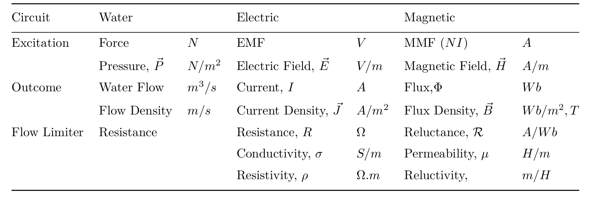

class: center, middle # EE-361 ELECTROMECHANICAL ENERGY CONVERSION ## Ozan Keysan [ozan.keysan.me](http://ozan.keysan.me) Office: C-113 <span class="meta">•</span> Tel: 210 7586 --- # Review ## Magnetic circuits are analogous to electric circuits:  --- # Ampere's Law ### \\(\oint_C {\vec{H}.d\vec{\ell}} = \sum I_n = NI \\) ### Integral of H around a closed contour C is equal to the net current passing through the path. <img src="http://farside.ph.utexas.edu/teaching/302l/lectures/img740.png" alt="Drawing" style="width: 300px;"/> ### Remember the right hand rule! --- # Ampere's Law ## Magneto-Motive Force (\\(\mathcal{F}\\)) ## \\( \mathcal{F} = NI \\) -- ## Electric Circuits: \\(\quad \quad V=IR\\) ## Magnetic Circuits: \\( \quad \quad \mathcal{F} = \Phi \mathcal{R} \\) --- # Assumptions we make in this courses -- ### - All flux contained in magnetic circuit (no leakage) -- ### - Uniform flux distribution in the core -- ### - Flux travels straight in airgaps (no fringing) -- ### - In some cases infinite permeability is assumed --- # Exercise ## With the same dimensions of the previous example: -- ## Assume Nt=5, I=10 A ## Find B and H in the core. --- ## What happens if you double the current? -- ## \\( \mathcal{F} = NI \\) -- ## Current is doubled --> MMF is doubled -- ## \\( \mathcal{F} = \Phi \mathcal{R} \\) -- ### [Breaking Bad - Magnets](https://youtu.be/J0IqVC8mTwk?t=47s) --- # Linearity vs. Non-linearity -- ## $$\vec{B} = \mu \vec{H} $$ -- # Linear B-H Characteristics - ## Air --- # B-H Curve of Air (Linear) -- <img src="http://www.itacanet.org/wp-content/uploads/2011/06/mag-600x521.jpg" alt="Drawing" style="width: 300px;"/> -- - ## Slope gives permeability (\\(\mu = \frac{B}{H}\\)) -- - ## Constant Slope = Linear Material --- ## Non-Linear B-H Characteristics - ### Iron, Cast-Steel ... - ### B limit => Saturation -- <img src="http://www.itacanet.org/wp-content/uploads/2011/06/fermags-600x488.jpg" alt="Drawing" style="width: 400px;"/> --- ## Non-Linear B-H Characteristics - ### Iron, Cast-Steel ... - ### B limit => Saturation <img src="http://people.ucalgary.ca/~aknigh/electrical_machines/fundamentals/images/figs/bh_sat.png" alt="Drawing" style="width: 500px;"/> --- # Faraday's Law of Induction -- ### \\(\nabla \times \vec{E} = - \dfrac{\partial \vec{B}}{\partial t}\\) ### which equals to: -- ### $$\oint_C \vec{E} dl = - \dfrac{d\Phi}{dt} = -\dfrac{d}{dt}\iint \vec{B} dA$$ ### !! The most important equation for EE362 --- # Faraday's Law of Induction ### Induced Voltage in a Coil ## $$ e= \oint \vec{E} dl = -\dfrac{d \Phi}{dt}$$ ## $$ e = -\dfrac{d \Phi}{dt} = -\dfrac{d}{dt}\int \vec{B} dA$$ --- # Ways to generate voltage in a coil -- - ## Time variation of flux (e.g. AC excitation) -- - ## Due to conductor movement in a stationary field -- - ## Rotation (e.g. motors) -- - ## Deformation of coil (Area changes) --- # Faraday's Law of Induction ## Total voltage in a coil with N turns ## \\(V_{coil} = N\dfrac{d \Phi}{dt} = \dfrac{d \lambda}{dt}\\) --- # Flux Linkage -- ### \\(\lambda\\) : Flux Linkage ### \\(\Phi\\) : Flux (per turn) ### \\(\lambda = N_{turns} \Phi \\) (turn. Weber) <img src="http://img.tfd.com/mgh/cep/thumb/B-magnetic-flux-field-of-a-short-coil.jpg" alt="Drawing" style="width: 300px;"/> --- # Kircchoff's Voltage Law <img src="http://media.techtarget.com/WhatIs/images/kirchhof.gif" alt="Drawing" style="width: 300px;"/> --- # Kircchoff's Voltage Law Out! # Faraday's Law In! <img src="https://i.pinimg.com/736x/f1/98/32/f1983283e078a166bcb2527f7c910bf2--michael-faraday-famous-quotes.jpg" alt="Drawing" style="width: 600px;"/> #### For More, Watch: [Walter Lewin-part1](https://www.youtube.com/watch?v=eqjl-qRy71w), [part2](https://www.youtube.com/watch?v=1bUWcy8HwpM) --- # Relation between Magnetic and Electric Circuits -- <img src="http://2.bp.blogspot.com/-Lm15GER7L20/VieZ0DjOoRI/AAAAAAAAAXA/RQHcpv7aBfk/s1600/inductor%2Bsymbol.jpg" alt="Drawing" style="width: 300px;"/> # \\( L = \dfrac{d \lambda}{d I}\\) --- # Relation between Magnetic and Electric Circuits ## What happens if you double the number of turns? -- ## Inductance increases with \\(N^2\\) --- # Inductance ## Inductance is the flux linkage created per ampere ## \\( L = N \dfrac{d \Phi}{dI}= \dfrac{d \lambda}{d I}\\) ## \\( L = \dfrac{N^2}{R}\\) --- ## You can download this presentation from: [keysan.me/ee361](http://keysan.me/ee361)